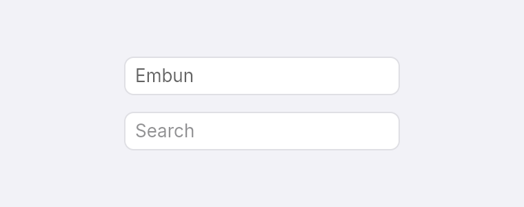
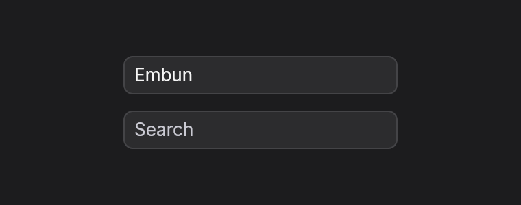
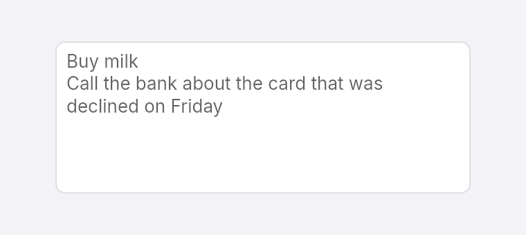
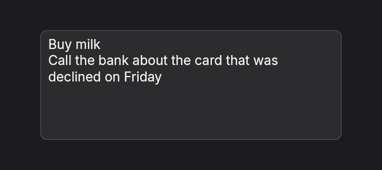

Text fields
Text fields show the value your app owns. When the user types, Embun calls the function you passed and sends your update the new text. You store it, and the next view passes it back in.
Single line
text_input(value, on_change) is 28 px tall and 200 px wide until you set w, h or grow. placeholder shows hint text while the field is empty, and label gives it a name for screen readers, since a placeholder is not a label.


fn field_single(_theme: &Theme) -> Element<Msg> {
column()
.gap_3()
.child(text_input("Embun", Msg::Text).label("Name"))
.child(text_input("", Msg::Text).placeholder("Search").label("Search"))
}fn update(&mut self, message: Msg) {
match message {
Msg::Text(text) => self.name = text,
}
}
fn view(&self, _theme: &Theme) -> Element<Msg> {
text_input(self.name.clone(), Msg::Text).label("Name")
}Multiple lines
text_area works the same way. Return starts a new line, long lines wrap at the width of the field, Up and Down move between lines, the wheel scrolls it, and the view follows the caret.


fn field_multi(_theme: &Theme) -> Element<Msg> {
text_area("Buy milk\nCall the bank about the card that was declined on Friday", Msg::Text)
.w(300.0)
.h(110.0)
.label("Notes")
}What the user can do
- Type, with Backspace and Delete, and with input methods for languages such as Japanese.
- Move with the arrow keys, by word with Option-Left and Option-Right, to the line ends with Home and End, and to the start or end of the text with Command-Up and Command-Down.
- Select with Shift and a movement key, with Command-A, or by dragging with the pointer.
- Copy, cut and paste with the system clipboard, and delete a word with Option-Backspace.
Double-click to select a word is not built yet. The cursor moves by character, so an emoji made of several characters takes several presses.